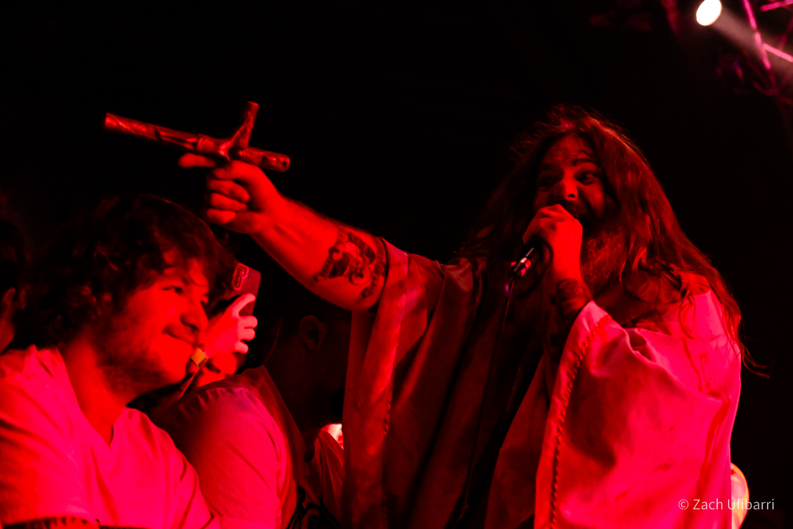
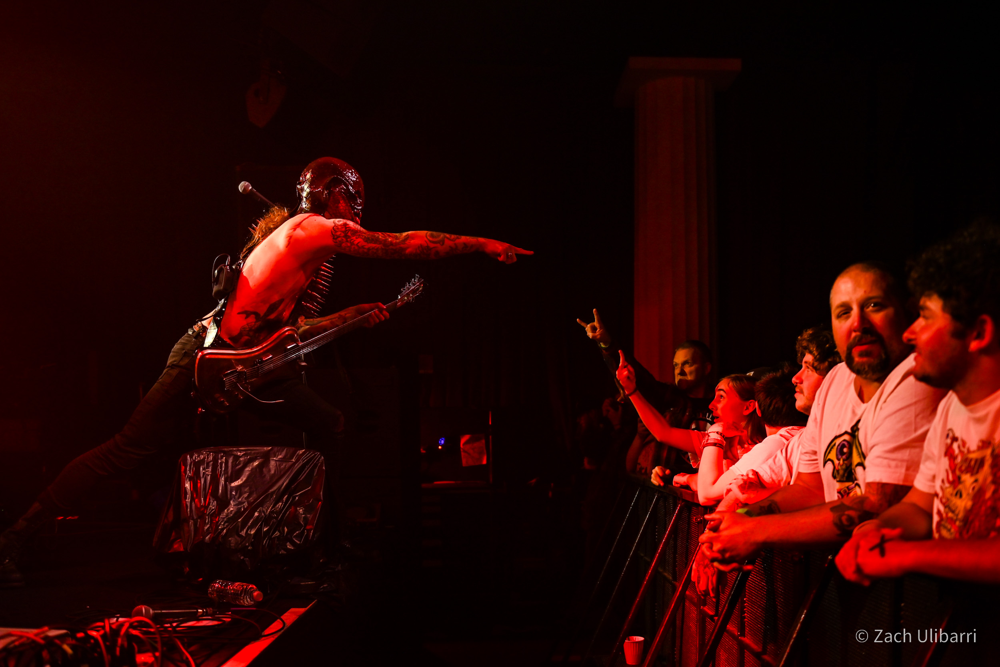
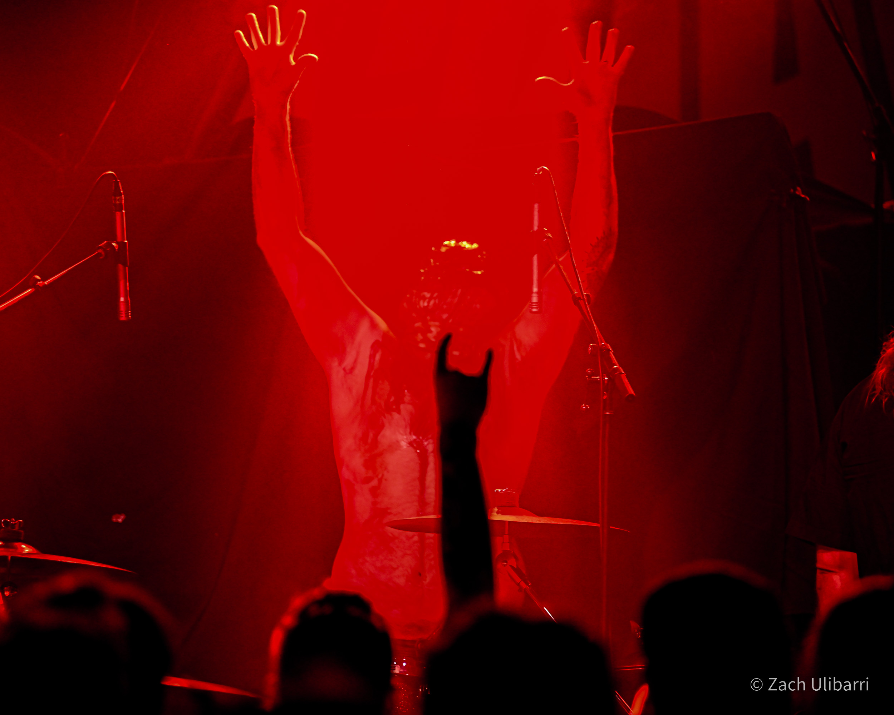
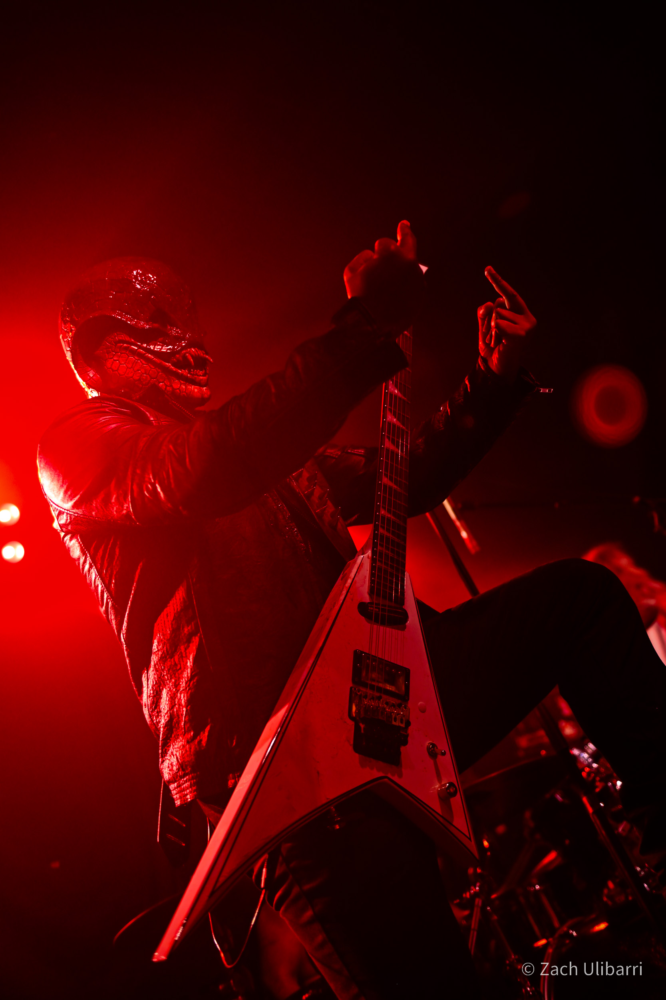
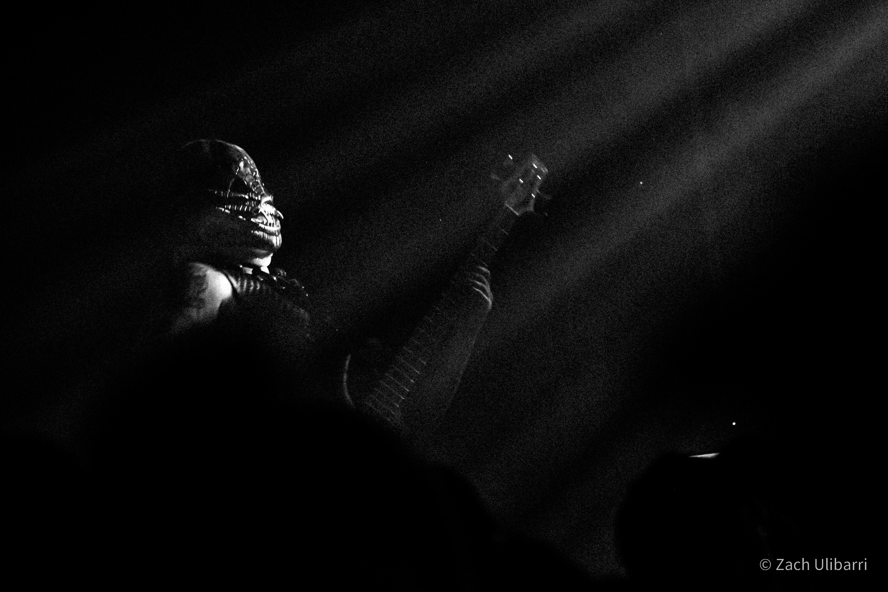
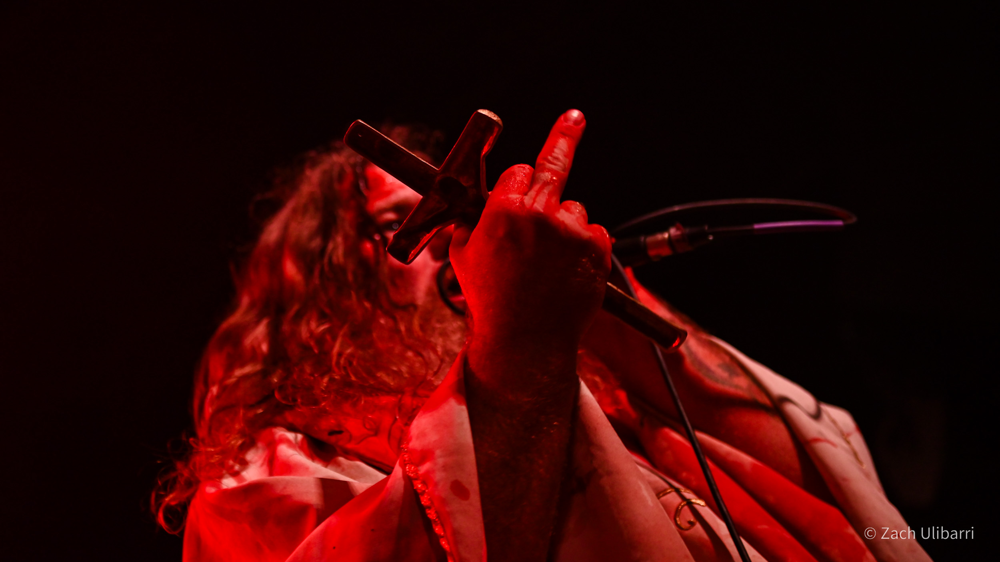
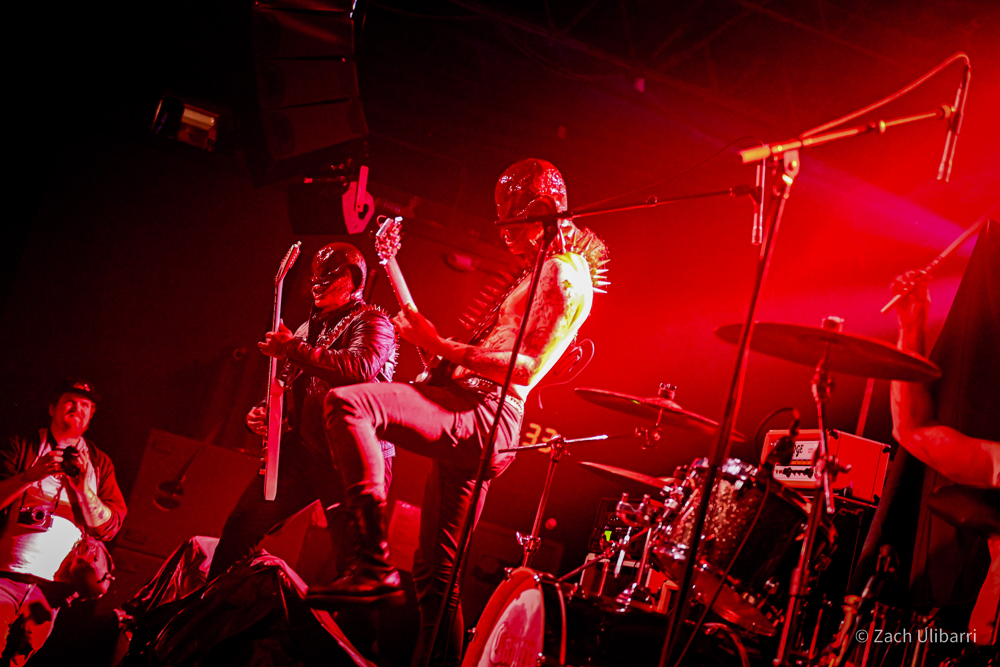

Zach Ulibarri
Cancer Christ Bids You Come to Church
Zach Ulibarri
October 2023
Hail Christ, sinners! For Saint Anthony and the Lord's Holy Snakemen bid you come to church to be "baptized in piss and shit" with their "Reptilian Christian Violence" music (to those sinners that haven't been to church recently, that would be a blend of hardcore, metal, and noise).
Los Angeles-based Cancer Christ recently completed their North American tour opening up for the long-running shock-rock act GWAR. Even for seasoned veterans of some insane shows, the set that Cancer Christ managed to concoct was absolutely wild. Inverting the ancient ways of the satanic strains of metal, frontman Saint Anthony repeatedly beseeched the audience to "Hail Christ" in between bouts of spraying fake blood all over everyone and preaching to the audience about the size of Jesus Christ's penis.

In truth, the philosophical implications for the size of the Holy Member is ripe for metaphysical examination [1]. Whatever the truth of this weighty theological matter, Cancer Christ made clear that they firmly (stiffly?) insist that there is no penis larger than Christ's when they intoned their sacred song, "Jesus Got a Big Ol Cock". This is of course in contrast to small-dick Satan, who in his nefarious ways is trying to pry us sinners from the Lord's Holy Light.

While Saint Anthony preached his Holy Sermon, the Snakemen roused the congregation with the Lord's Holy Noise. Piss Snake's mighty bass sounded out the Divine Rhythms, Apocalypse Snake's drums pounded out the Holy Beats, and of course, Snake Boss and Diesel Snake used their electric guitars to unleash the Sacred Shreds upon the audience.

Cancer Christ never deviated from its core mission of spreading the love of Christ, but only where they deem it due, of course. They had no qualms about belching the fire and brimstone of the Lord's Holy Hatred with classic church hymnals such as "God Hates Cops" and "Bring Back the Guillotine". They also played more modern fan favorites such as "Hail Christ VI" and "Hail Christ III". So complete is their love of the Bible that they even took pages of the Good Book out and distributed them (individually) amongst the congregation:
The energy and chaos that they brought to the stage was a highlight of the night, even as they were followed by legendary Detroit hardcore band Negative Approach and the unpredictable anarchy of GWAR. It is indeed surprising that in the same night that I watched GWAR cut off the saggy tits of an effigy of Vladimir Putin, the most memorable band was in fact Cancer Christ. This humble servant of the Lord certainly has faith that he will see Cancer Christ tour the region again as something quite different than the opening act.

Unfortunately the strain of fighting shrivel-dick Satan has taken its toll on the band. After a flurry of concerts across multiple tours, Cancer Christ had to cancel their few remaining shows scheduled for 2023, so fans who wish to baptized will have to wait until 2024. But these fans nonetheless have great reason to rejoice. The great priest Martin Luther once said, "Music is hateful and intolerable to the devil," and "Music is the perfect way to express our love and devotion to God." It is in this righteous vein that Cancer Christ is hard at work preparing for the release of their first full-length album, "God is Violence", due in January of 2024. May we all pray that their Sacred Sounds radiate a most-holy light that guides the Snakemen to cast soft-dick Satan back to the shadows whence he came. Hail Christ!

[1] Verily, it is surprising that there is no great philosophical treatise about the size of Jesus's penis. After all, the Gospel implies (but does not explicitly state) that Jesus was crucified as a virgin. Contrary to modern thought, the ancient Greeks who laid the philosophical foundations of Christ's zeitgeist chose to sculpt their heros with minor members because they believed that large penises were found only on lustful and stupid brutes [2]. Powerful, great men were thought to have small pricks that illustrated their superior judgement and self-control, both of which should be readily abundant in Christ. On the other hand, to the modern mind it seems patently obvious that should Jesus have (however hypothetically) chosen to spend his three resurrected days laying down pipe with Mary Magdalena, he would be fully equipped to give a dick-down of only the most literal of Biblical proportions.
[2] Alexxa Gotthardt. "Why Ancient Greek Sculptures Have Small Penises," Artsy.net (2018).

